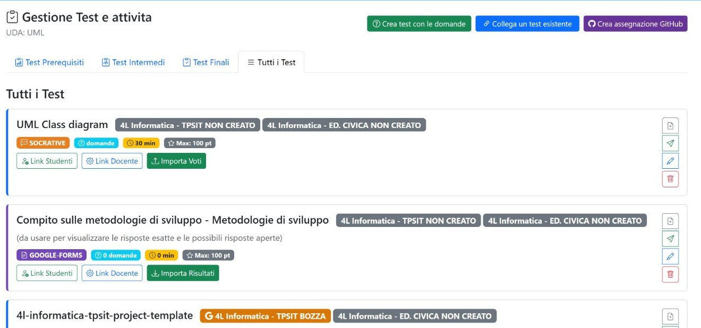

Capitolo 05 · verifiche e consegne
Test e attività
Questa pagina organizza le prove associate a UML, divise per momento didattico. Le schede possono collegare una prova esistente, crearne una nuova o impostare un’attività collegata al gruppo.

Comandi nella pagina Test
| Controllo | Funzione |
|---|---|
| Prerequisito / Intermedio / Finale / Tutti | Passa tra i test secondo la loro fase; Tutti mostra l’insieme delle prove collegate. |
| Crea test con le domande | Apre la banca delle domande collegata all’UDA; da lì si prosegue nella preparazione della prova. Il pulsante non crea immediatamente un test. |
| Collega un test esistente | Apre la scelta di una prova già presente e la associa all’UDA selezionata. |
| Crea assegnazione | Apre il flusso per assegnare l’attività al gruppo destinatario e definire i dettagli della consegna. |
| Link Studenti | Apre il collegamento dedicato alla vista studenti della prova. |
| Link Docente | Apre il collegamento dedicato alla vista docente della prova. |
| Importa risultati | Apre il caricamento dei risultati e la relativa anteprima; controlla le corrispondenze prima di confermare. |
| Modifica | Riapre i parametri della prova associata. |
| Elimina | Chiede conferma ed elimina il record del test selezionato dall’elenco dell’UDA. Prima di confermare, verifica che sia il test corretto. |
Esempio: collegare una prova esistente
- Apri il tab del momento didattico adatto oppure Tutti.
- Seleziona Collega un test esistente.
- Scegli la prova dalla lista e verifica titolo e contenuto.
- Conferma l’associazione e torna alla pagina per controllare che la scheda sia comparsa.
La ricognizione ha documentato i comandi e le schede dell’UDA, senza creare test, assegnazioni o risultati.